Chapter 6 Creating Maps in R
This chapter gives you an introduction into basic map creation with R.
We will use a range of packages (currently only tmap implemented) to create both interactive (not yet) and static maps.
Interactive maps are great to explore your data or for interactive documents like html documents and websites. Static maps require more effort but are necessary for static documents, i.e., .pdf, docx., or pptx.
First, we load all the sf package which we need to represent spatial data in R.
We will also load some data to plot.
lucas <- readRDS("data/lucas_saxony.rds")
germany <- st_read("data/gadm36_DEU_3_pk.gpkg")
rivers <- st_read("data/rivers_sachsen.gpkg")We will also download a DEM for Saxony with the geodata package (Hijmans, Ghosh, and Mandel 2022).
The function elevation_30s() downloads a DEM for Germany with a resolution of 30 arc seconds (i.e. one degree divided by 3600). For more details on the geodata package see here.
The data are downloaded to a folder specified in the path argument.
Afterward, we load the data with the terra package.
library(geodata)
elevation_30s(country = "DEU", path = "data/elevation")
dem <- rast("data/elevation/DEU_elv_msk.tif")All the maps I create as examples here are for Saxony.
So we will extract Saxony from the germany data set and the raster.
saxony <- filter(germany, NAME_1 == "Sachsen")
saxony_dem <- mask(dem, saxony)
saxony_dem <- crop(saxony_dem, saxony)For most object classes, we can use the base plot() function to create a very basic static map.
For sf objects, we get one plot per variable.
## Warning: plotting the first 9 out of 22 attributes; use max.plot = 22 to plot allThese maps are not very informative and should not be used for reports or presentations. The defaul plot for rasters is already a lot better.

There are several good options to create maps with both rasters and vectors in R.
Some package can create both static and interactive maps and others are specifically designed for one of the two. We will go through several packages in order of decreasing importance.
From my experience you will rarely need other packages than tmap (Tennekes 2018) to create good maps.
This is why we start with this package.
However, some packages provide functions that are not available in tmap and so will also cover several other further down.
6.1 tmap
tmap is a large package with lots of functions.
We will only scratch the surface here.
For a more in-depth introduction see here (at the time of writing the book is still under construction).
Besides the regular maps, tmap can create quickmaps with the qtm() function that can be handy for data exploration.

These maps are similar to those created by the base plot() function.
The main difference is that we only get one map.
While the beauty of the qtm() function is that we do not need to add any information besides the data set, if we want, we can add more variables.

6.1.1 Basic tmaps
Usually however, you will be using the regular map approach.

Here, we first provide the data set we want to plot to the tm_shape() function and then specify how we want to display the data.
Here, we used tm_symbols() but there are many different visual elements we can add to a map.
Some are just shape-explicit versions of tm_symbols.
For example, tm_dots(), tm_squares(), tm_markers(), or tm_bubbles().


All of these visual elements are applicable to point data.
For polygons and lines we need other elements.
For lines, we use tm_lines().
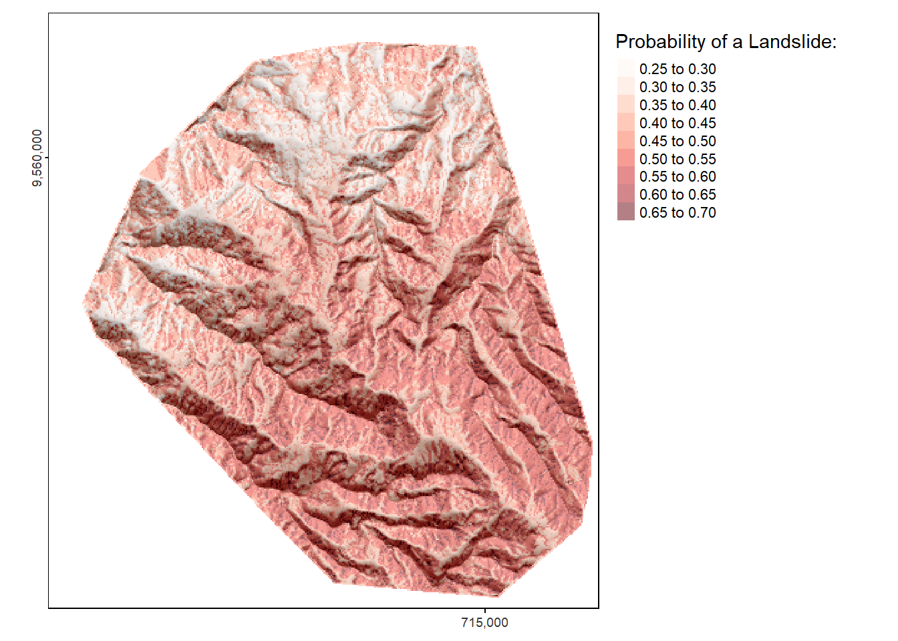
For polygons, we can use tm_polygons(), tm_borders(), or tm_fill().
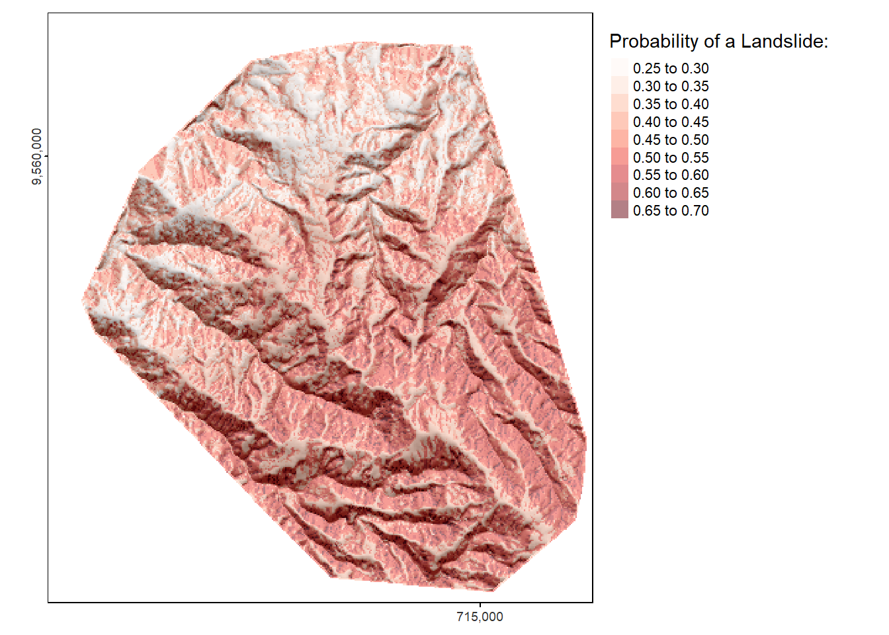


For raster, we use the tm_raster() function.
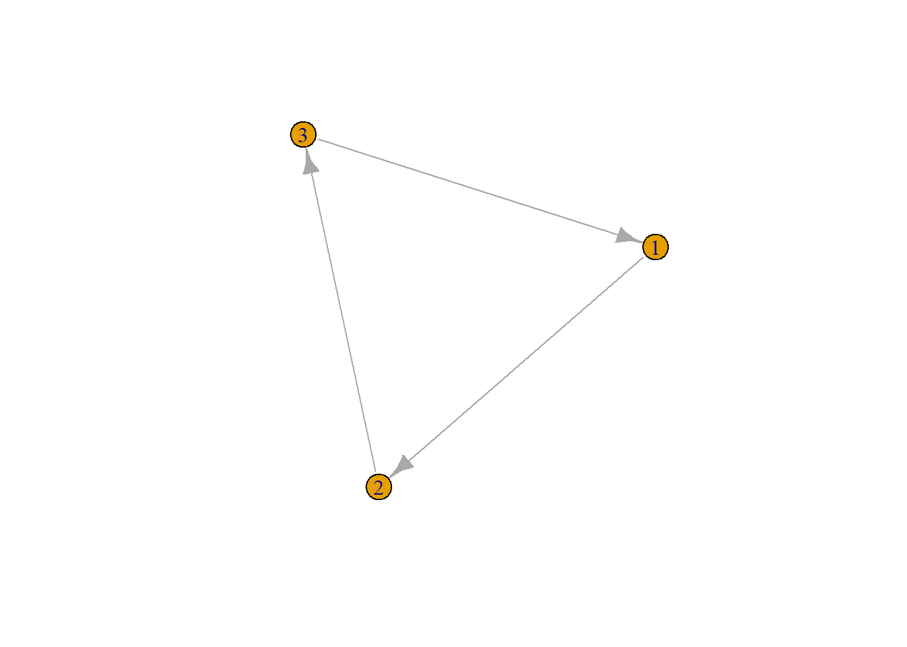
So far, we have only used the most basic functionality of tmap.
We have specified a single data set and used one visual element to populate the map.
Most visual elements have properties that we can adjust.
We have already seen this with tm_symbols(), where we specified the size and shape of symbols.
Those specifications are made within the brackets following the call to the visual element.
For example, if we want to set the size of our bubbles we use:
6.1.2 Adjusting visual elements and multiple groups

These attributes can either be fixed or variable. So far we have only used fixed attributes (e.g., all points have the size 2). Variable attributes follow variables of the data set. We could for example control the color of the points by the electrical conductivity.
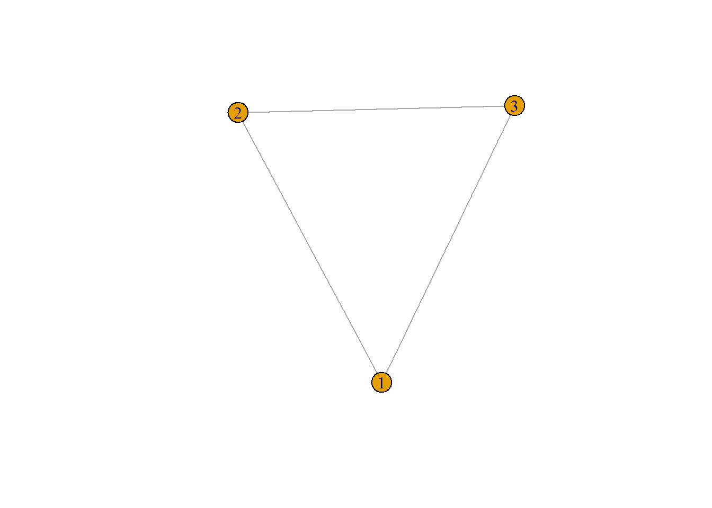
As you can see, we the name of the variable, we want to use, needs to be provided in quotation marks.
Since the electrical conductivity is a numerical variable, tmap automatically chooses a continuous color scale.
If we transform EC into a factor variable or a character, tmap would use a categorical color scale.
## Warning: Number of levels of the variable "EC_char" is 75, which is larger than max.categories (which is 30), so levels are combined. Set
## tmap_options(max.categories = 75) in the layer function to show all levels.
For point data we generally have the arguments: size, color, transparency (alpha), border color, line width, and transparency.
tm_shape(lucas) +
tm_bubbles(col = "EC",
size = "OC",
alpha = 0.5,
border.col = "red",
border.lwd = .5,
border.alpha = 1)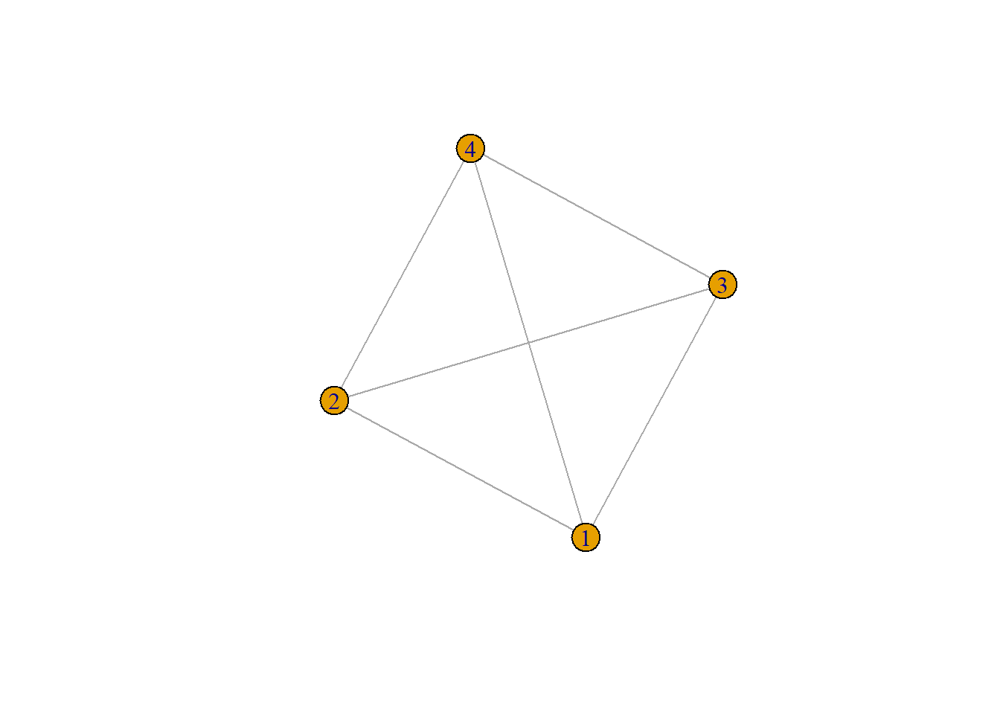
For line data, we can determine the line width, color, type, and transparency.

For polygons, we have similar options. We can alter color and border type.

As you can see, we can add multiple visual elements based on the same shape. We can also have mutliple shapes in the same map.
tm_shape(saxony_dem) +
tm_raster() +
tm_shape(st_union(saxony)) +
tm_borders(lwd = 2, lty = "dashed") +
tm_shape(rivers) +
tm_lines(col = "blue") +
tm_shape(lucas) +
tm_bubbles(col = "EC", palette = "viridis", size = .2) 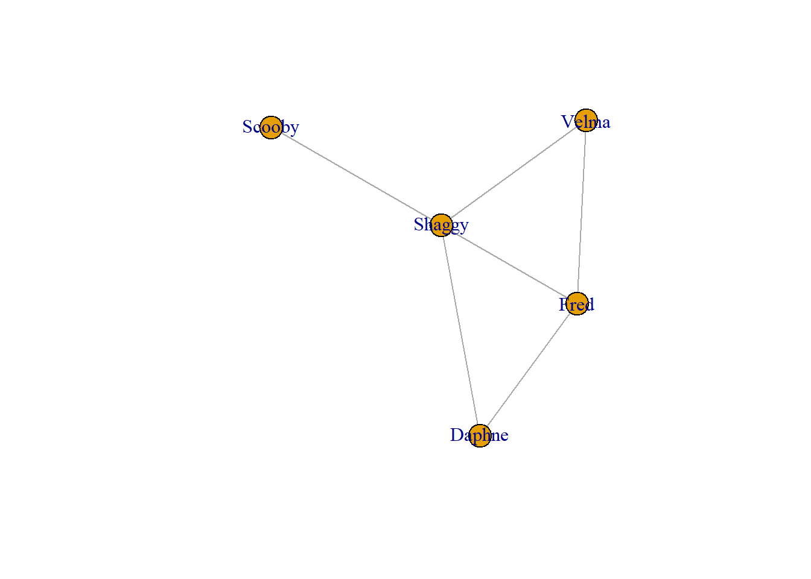
The combination of shape and visual element is called a group. As you have just seen each map can have multiple groups and each group can have multiple visual elements.
6.1.3 Map extend
The map uses the extend and projection of the first group, i.e. the data set that is specified in the first call to tm_shape().
This can be changed by explicitly specifying the master shape with is.master.
tm_shape(saxony_dem) +
tm_raster() +
tm_shape(st_union(saxony)) +
tm_borders(lwd = 2, lty = "dashed") +
tm_shape(rivers) +
tm_lines(col = "blue") +
tm_shape(lucas, is.master= T) +
tm_bubbles(col = "EC", palette = "viridis", size = .2) 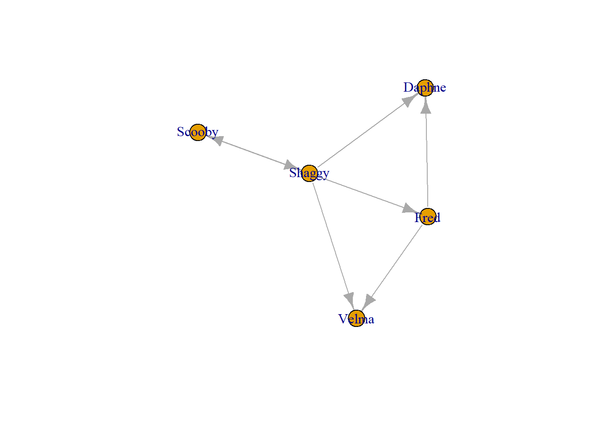
Alternatively, the projection and extend can also be set manually.


tm_shape(saxony_dem, bbox = c(13, 14, 50.8, 51.3)) +
tm_raster() +
tm_shape(rivers) +
tm_lines(col = "blue") 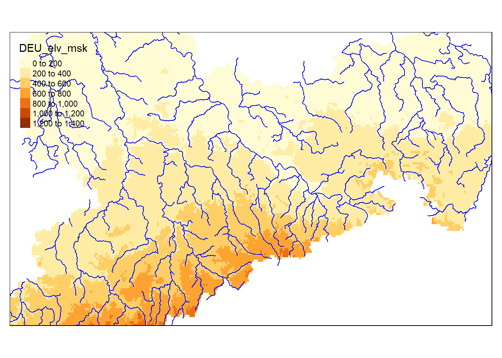
We can use place names, coordinates, or other data sets to set the map limits.
6.1.4 Further map elements
There are additional elements we can add to our map. Good maps should always have a north arrow and a scale bar.
tm_shape(saxony_dem, bbox = "Saxony") +
tm_raster() +
tm_shape(rivers) +
tm_lines(col = "blue") +
tm_compass(position = c("right", "top")) +
tm_scale_bar(position = c("right", "bottom"))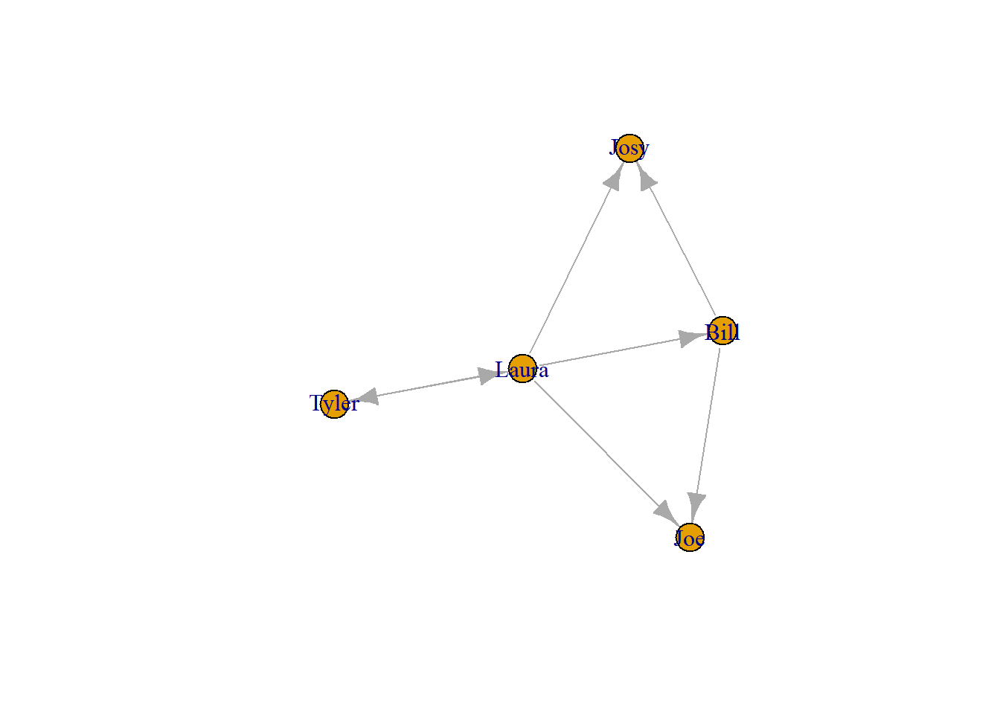
Further elements are graticules and credits.
tm_graticules() +
tm_shape(saxony_dem, bbox = "Saxony") +
tm_raster() +
tm_shape(rivers) +
tm_lines(col = "blue") +
tm_compass(position = c("right", "top")) +
tm_scale_bar(position = c("right", "bottom")) +
tm_credits("Jonathan Jupke, 2023")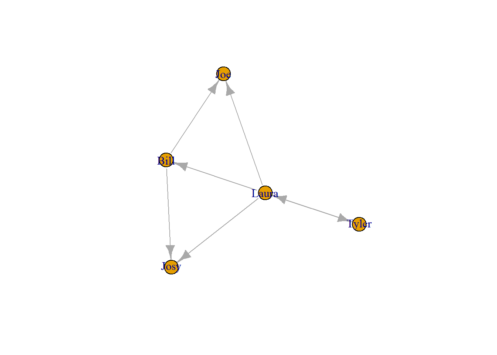
6.1.5 Making the map prettier
So far we have only been concerned with putting data on our map. Like all plots however, maps should convey their message and be nice to look at. Your readers will have to spend more effort trying to understand an ugly map. Generally, nicer figures are not only better in getting across your message. They also convey a general sense of care - nice figures show that you put thought and effort into your document.
The maps we have created thus far do not convey this impression.
To fix this, we need to address the background.
There are two options: using a base map or a background color.
The latter is easier, so I will show it first.
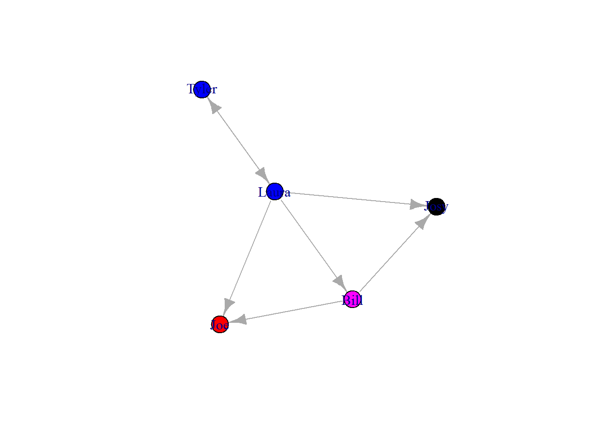
Background colors can be an easy solution. They can however, also invoke false impressions. The above map, for example, makes it seem like Saxony is an island.
Base maps are maps on which your data is drawn.
They are usually rasters and can be downloaded from multiple sources.
Here, we will use the maptiles package (Giraud 2022).
This package basically has just one function: get_tiles().
That function downloads a base map for you.
We provide a spatial object (sf, sfc, bbox, SpatRaster, SpatVerctor, or SpatExtent object) to its x argument, the base map style we would like to the provider arguments (see here for examples), and the level of detail to the zoom argument.
library(maptiles)
bm <- get_tiles(x = saxony_dem,
provider = "Esri.WorldImagery",
zoom = 8,
crop = TRUE)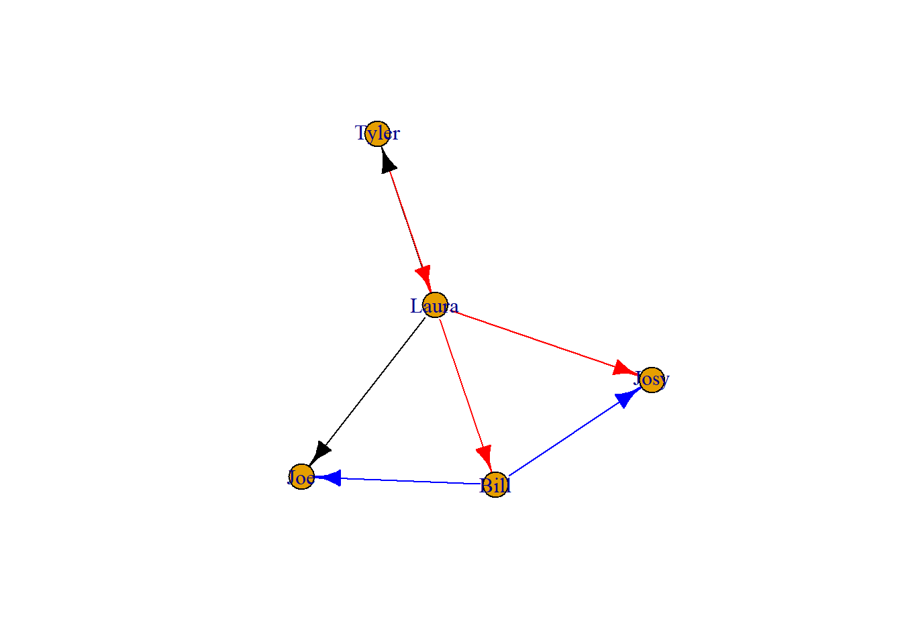
Second, the legend is often covering parts of the map. We can avoid this by moving it outside.
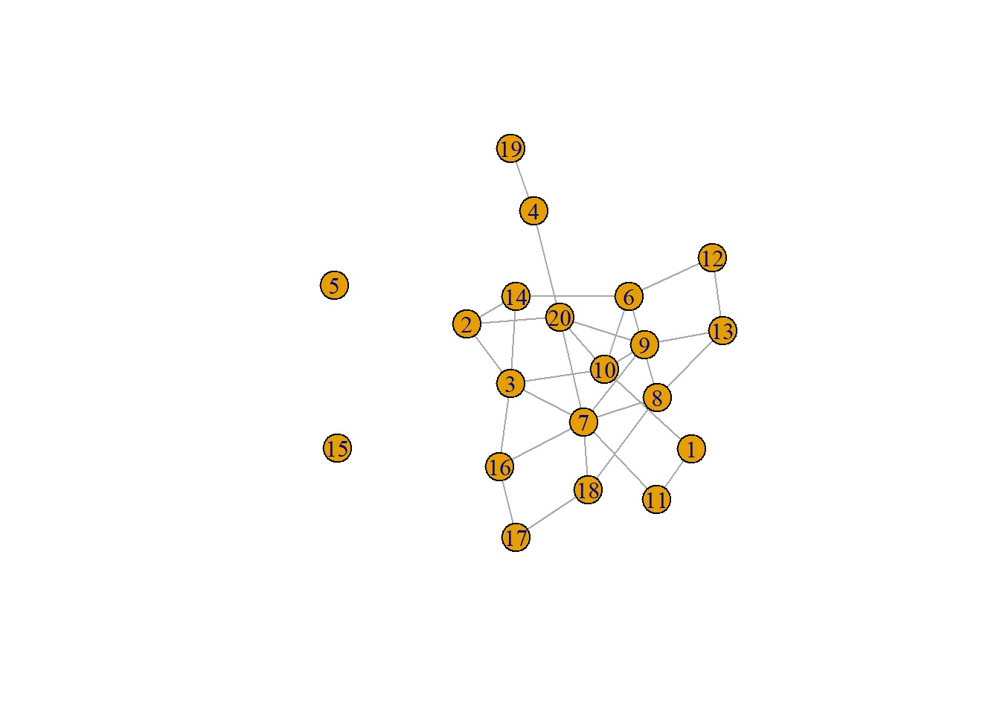
Lastly, the color scale is rather unusual for a DEM.
Here we use nicer colors and also add all the other elements to the map.
You can have a look at all the palettes available to tmap if you call tmaptools::palette_explorer().
tm_shape(bm) +
tm_rgb() +
tm_shape(saxony_dem) +
tm_raster(palette = terrain.colors(n = 20), alpha = 1, title = "Elevation [m]") +
tm_shape(rivers) +
tm_lines(col = "lightblue") +
tm_shape(lucas) +
tm_dots(size = .3, col = "EC", palette = "inferno", title = "Electrical Conductivity [μS]") +
tm_compass() +
tm_scale_bar() +
tm_layout(legend.outside = TRUE,
main.title = "Electrical Conductivity in Saxony"
) 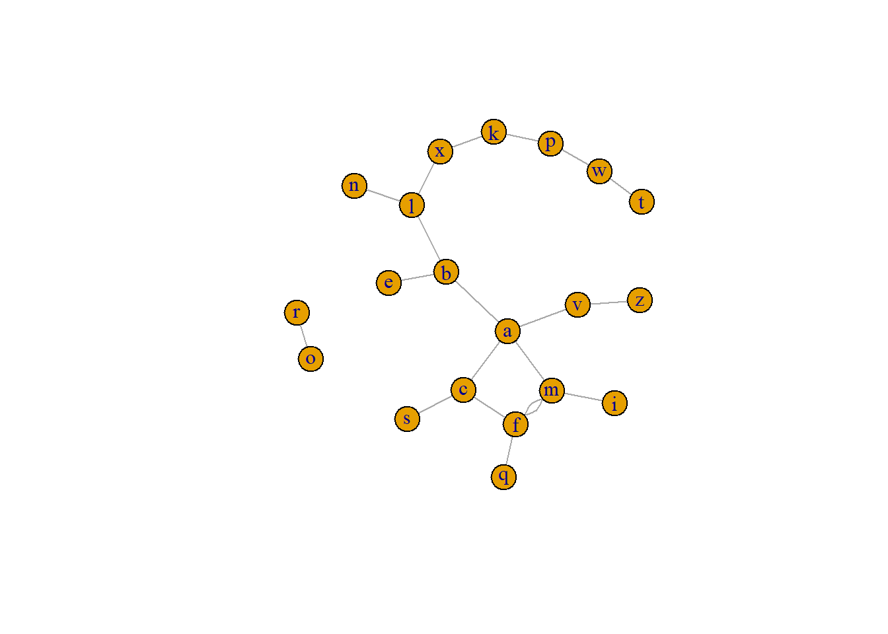
It can also be nice to create maps with an inset, i.e. maps that include a smaller map that shows the larger context of the map. This is possible with tmap but extends beyond the scope of this chapter.
See here for a tutorial.
6.2 rasterVis
Here, we will explore the basic functionality of the rasterVis package.
As the name already suggests, the purpose of this package is to display raster data.
While the common R packages to work with rasters, like raster or terra (see chapter 6)), already provide basic plotting functionality, rasterVis extends this substantially.
You can find a more extensive documentation for the package here.
First we need to load some rasters.
We will use the geodata package (see next chapter) to download a digital elevation model of Austria.
In addition, I want to show you how changes over time can be displayed. So we will also need spatio-temporal data. Below, we download and load solar irradiance data from the Satellite Application Facility on Climate Monitoring (CMSAF). There are a series of packages that you could also use specifically to access these data, for example the cmsaf package.
download.file('https://raw.github.com/oscarperpinan/spacetime-vis/master/data/SISmm2008_CMSAF.zip',
'SISmm2008_CMSAF.zip')
unzip('SISmm2008_CMSAF.zip')
listFich <- dir(pattern='\\.nc')
stackSIS <- stack(listFich)
stackSIS <- stackSIS * 24 ##from irradiance (W/m2) to irradiation Wh/m2
idx <- seq(as.Date('2008-01-15'), as.Date('2008-12-15'), 'month')
SISmm <- setZ(stackSIS, idx)
names(SISmm) <- month.abb## Lade nötigen Namensraum: ncdf4Ok, with that we can start plotting the data.
The basic plotting function in rasterVis is called levelplot(). If we use that with our Austrian DEM and the irradiance data we get these plots:

As you can see, the second plot does not have plots in the margins like the first one.
levelplot() only creates marginal plots for rasters with a single layer.
If we select one layer, the solar irradiance plots also include these marginal plots.

By default these plots show the means of their respective column or row but we can change this to any function we like. In the plot below, for example, we see the minimal altitude not the mean altitude in the margins.
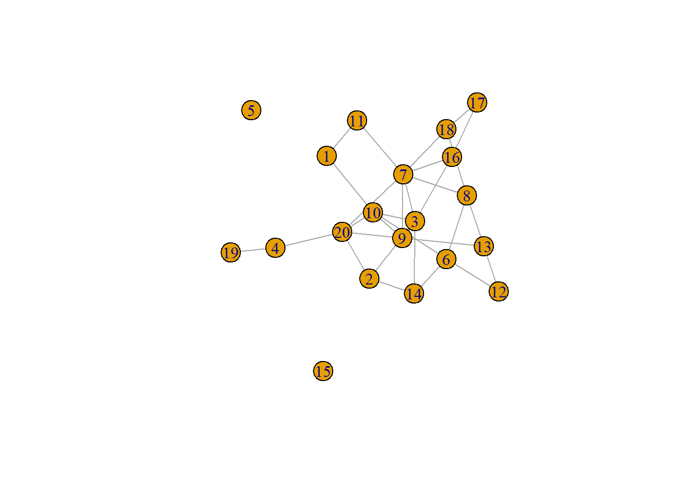
We can also alter the raster values directly in the call to levelplot().
For example, we can display the logarithm (with base e) by adding the argument: zscaleLog="e". In this plot, we also add contour lines.
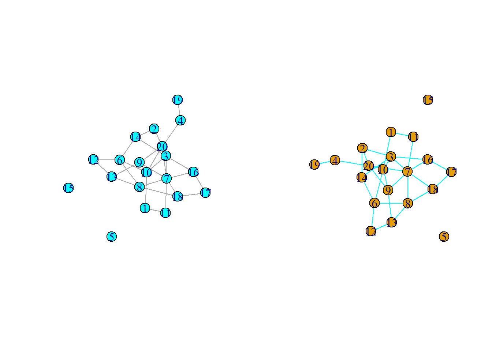
You might have noticed that sofar all plots have used the same colors (magma palette from the viridisLite package). We can easily change this to other palettes:

Alternative palettes are; viridisTheme, infernoTheme, plasmaTheme, YlOrRdTheme, BuRdTheme, GrTheme and BTCTheme.
6.2.1 Beyond the usual
All of this is very nice but merely a small extension of what raster or terra can already do.
However, rasterVis has some more tricks up its sleeve.
Like the xyplot() you can see below.
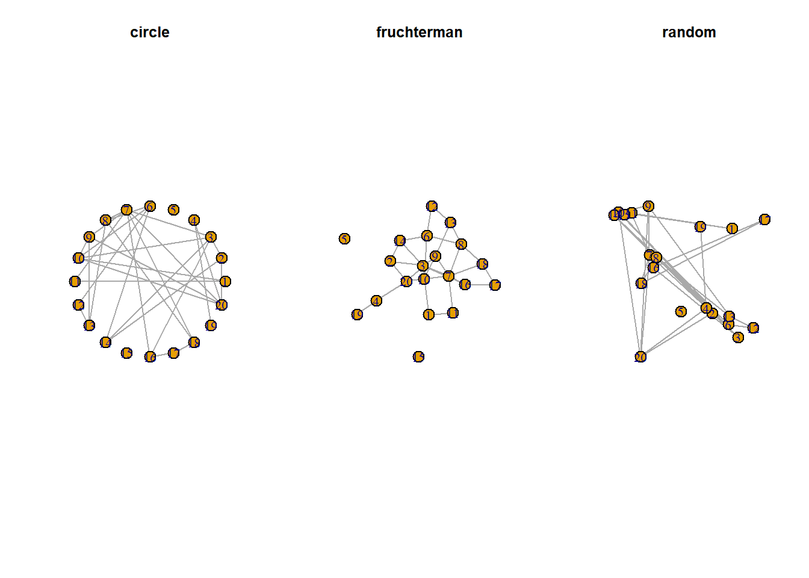
In the function call there are three building blocks: 1. Jan+Feb~Jul|cut(x, 2); 2. data = SISmm; 3. auto.key = list(space='right').
The latter two require less explanation so we will start with them.
The data argument receives the raster you want to plot.
The auto.key, at least here, is only there to receive the position of the legend.
The first argument is written in R’s formula notation.
You probably know it from fitting models in R, e.g. lm(x ~ y + z).
The response (Jan+Feb) is displayed on the Y-axis and the predictor (Jul) on the X-axis. Each dot in the scatter plot is one cell value of SISmm. |cut(x,2) indicates that we want to split the X-axis into two distinct plots. The values on top of the two plots indicate the X-range for each of them.
One drawback of this plot is that many points are on top of each other. A density plot would be helpful for that and indeed rasterVis provides hexbinplots just for that. Note that we have to drop the second response variable in the hexbinplot.
Lastly, rasterVis makes it easy to make four common exploratory plots for the raster cell values: 1. scatter plot matrices (splom), 2. histograms, 3. densityplots and box and whiskers plots.


6.4 Rayshader
In this entry we will go through the basics of rayshader. Rayshader is one of those packages that you see again and again when you follow people from the R-spatial community on twitter. Especially the package’s creator Tyler Morgan-Wall (see here for his website and here for his Twitter) posts videos and images of things he did with it on an almost daily basis. And he has all the reasons to do so. I don’t know any other package that enables you to create such stunning 3D graphics with R. If you have never seen this package before I am quite sure you are going to be surprised by what is possible.
6.4.1 Setup
First things first, we need to install and load the rayshader package, as well as some other packages we will need along the way.
We will use an example raster file from Tyler Morgan-Walls website. We can download the files with the following code:
loadzip = tempfile()
download.file("https://tylermw.com/data/dem_01.tif.zip", loadzip)
localtif = raster(unzip(loadzip, "dem_01.tif"))
unlink(loadzip)Before we do anything fancy let’s have look at our new raster. It is a DEM with 505 rows and 550 columns and each cell has size of 33.3m * 33.3m. There are strong differences in height here, from 0 to 971m.
## class : RasterLayer
## dimensions : 505, 550, 277750 (nrow, ncol, ncell)
## resolution : 33.36518, 33.36518 (x, y)
## extent : 505010.3, 523361.2, 5258284, 5275133 (xmin, xmax, ymin, ymax)
## crs : +proj=utm +zone=55 +south +ellps=GRS80 +units=m +no_defs
## source : dem_01.tif
## names : dem_01
## values : 0, 971 (min, max)
To work with *rayshader** we will need to transform this to a matrix with the raster_to_matrix() function.
Then we can start with add a specific texture as well as shadows.
## [1] "Dimensions of matrix are: 505x550"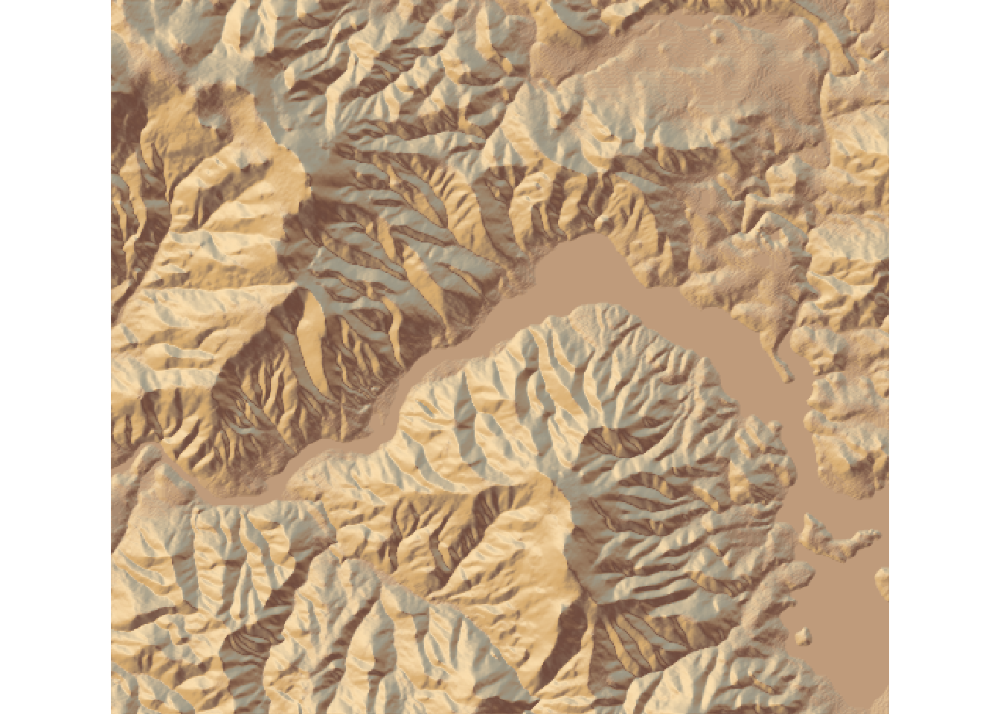 The shadows are computed for a default sun angle, but we can change that angle if we like.
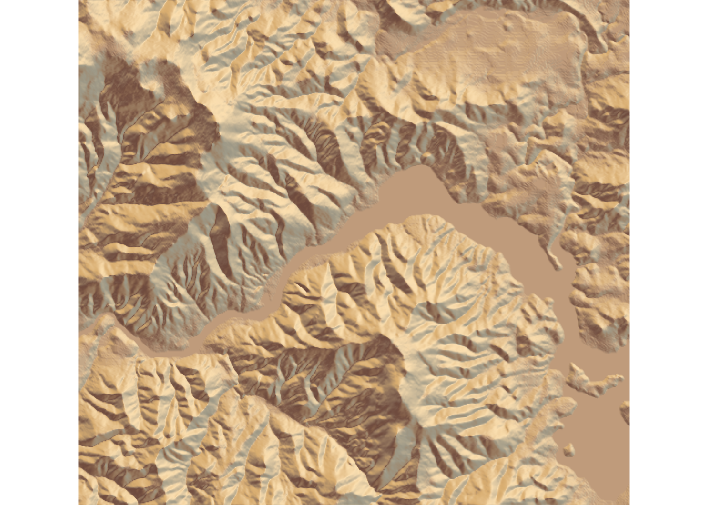
Now you might have noticed that the areas in the valley look suspiciously flat.
That’s because they are water surfaces.
With the two functions detect_water() and add_water() we can add water to our map.
detect_water() returns a binary matrix with the same dimensions as elmat.
A one indicates that the corresponding cell in elmat contains water and a zero that the cell does not.
With the cutoff argument you can specify how high the water should be, i.e. which cells are classified as carrying water.
High values mean lower water level.
elmat %>%
sphere_shade(texture = "desert") %>%
add_water(detect_water(elmat, cutoff = 0.9), color = "desert") %>%
plot_map()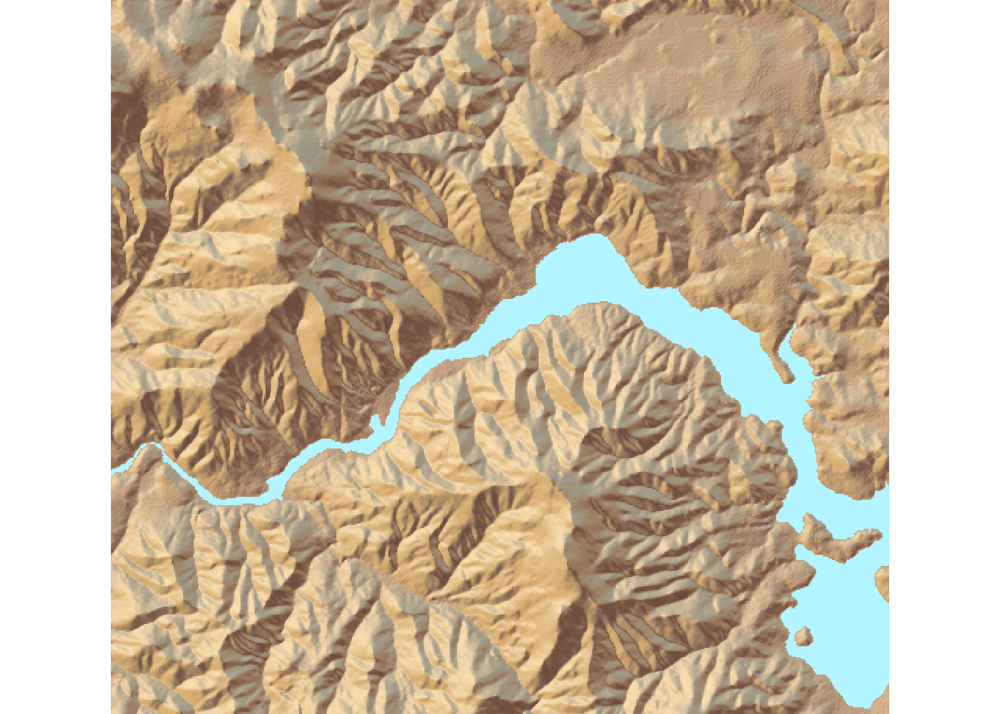
Now we don’t have any shadows on the water yet.
But that can be done with add_shadow().
elmat %>%
sphere_shade(texture = "desert") %>%
add_water(detect_water(elmat), color = "desert") %>%
add_shadow(ray_shade(elmat), 0.5) %>%
plot_map()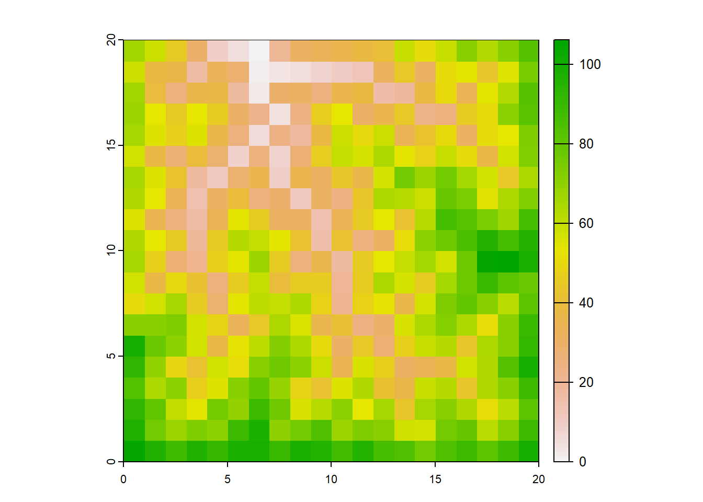
In addition to rayshade we can also ad ambient shade, to make it look even better.
elmat %>%
sphere_shade(texture = "desert") %>%
add_water(detect_water(elmat), color = "desert") %>%
add_shadow(ray_shade(elmat), 0.5) %>%
add_shadow(ambient_shade(elmat), 0) %>%
plot_map()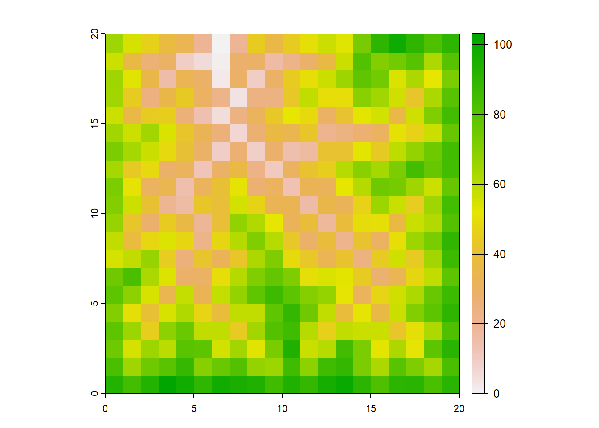
All this was only the preparation though for the 3D capabilities of rayshader.
elmat %>%
sphere_shade(texture = "desert") %>%
add_water(detect_water(elmat), color = "desert") %>%
add_shadow(ray_shade(elmat, zscale = 3), 0.5) %>%
add_shadow(ambient_shade(elmat), 0) %>%
plot_3d(elmat, zscale = 10, fov = 0, theta = 135, zoom = 0.75, phi = 45, windowsize = c(1000, 800))
Sys.sleep(0.2)
render_snapshot()
This package can do much more than we discussed here or than is really useful for scientific purposes. See here for more extensive coverage.